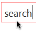
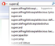

Tools
Other browser installation instructions
| Tools | |
|  | Let me DDG that for you! By Michael Stephens; open source http://lmddgtfy.com/?q=search |
|  | DDG + Google Suggest By Nathan Friedly Open source |

|
Voice Search (Chrome) By Eli Grey; open source DDG is default engine. |

|
FastestFox / Chrome Get 0-click by selecting text. |

|
Zero Click jQuery Widget by Dhruv Matani Get 0-click for jQuery via API |

|
Torbutton Anonymize Firefox DDG the captcha default |

|
Factotum Search assistant for Safari DDG is default engine |

|
Alfred Search assistant for Mac DDG in list of engines |
| Browsers & Distros | |

|
Midori Lightweight Webkit browser DDG is default engine |

|
Inception iPhone/iPad social browser DDG is default engine |

|
Cyberspace iPhone/iPad Web browser DDG is default engine |

|
Trisquel GNU/Linux distribution. DDG is default engine |

|
iCab Mobile iPhone/iPad tabbed browser DDG in list of engines |

|
GNU IceCat GNU version of Firefox DDG in list of engines |

|
Konqueror Open source Web browser DDG in list of engines |

|
K-Meleon Open source Web browser DDG in list of engines |

|
Dooble Open source Web browser DDG in list of engines |
| Official Apps & Add-ons | |

|
iPhone/iPad app By CHS Systems |
| Android App By Caine Tighe Use QR code to install | |

|
Firefox Search Plugin HTTP, HTML & Lite versions |

|
Search Box DDG search box on your site |

|
Chatbot Send IMs to im@ddg.gg Get 0-click info and results. |
| An official BlackBerry app is in the works... | |
| Unofficial Apps & Add-ons | |

|
Safari Extension By Victor Quinn; open source In Safari Extensions Gallery |

|
IE Search Plugin By Woody Pewitt In IE Add-ons Gallery |

|
Chrome Extension By Nikhil Ben Kuruvilla Open source |

|
Opera Extension By Shwetank Dixit Open source |

|
Mac / Windows Widget MultiSeeker, by Nick DDG is default engine |
| Just for Fun | |
|
|
Logos! By duck.co; open source |

|
DodoDodoGo |

|
DuckGoGo |
- SSL/HTTPS - There are also encrypted (SSL/HTTPS) browser plugins. The eaisest way to install them is to go to our encrypted home page and click the 'Add to Browser' link at the bottom.
- Safari - To add to search box (as opposed to above extension), first install Glims. Then add DDG as a custom search engine like this and then this. If you're real brave, you can actually try editing the binary.
- Firefox - To add to address bar (as opposed to the search bar via above plugins), type about:config into the address bar, search for keyword.url and then change it to https://duckduckgo.com/?q=
- Opera - Go to the homepage, right click the search box, select 'Create Search', put 'd' in the Keyword box, click checkboxes and then OK.
- OmniWeb - Add to Shortcut Preferences (in OmniWeb Preferences) -- Name: DuckDuckGo; Keyword: ddg@; URL: https://duckduckgo.com/?q=%@. Finally, select DuckDuckGo as default in Search Field.
- Epiphany - For v3 and newer, there are at least two ways to change the default search engine. 1. using dconf-editor edit: org > gnome > Epiphany > keyword-search-url 2. from command line use this one-liner: GSETTINGS_BACKEND=dconf gsettings set org.gnome.Epiphany keyword-search-url https://duckduckgo.com/?q=%s. For older versions, go to > Menu > System Tools > Configuration Editor (or "gconf-editor" in the console). Drill down to key /apps/epiphany/general/url_search and overwrite the key with your ddg version of choice, e.g. https://duckduckgo.com/?q=%s for the SSL version (making sure to put the %s part at the end after the ' = ' symbol).
- Conkeror
- Android
- iOS
{kind=link}
{kind=link}